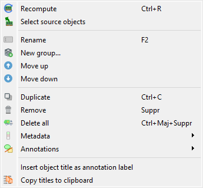
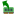
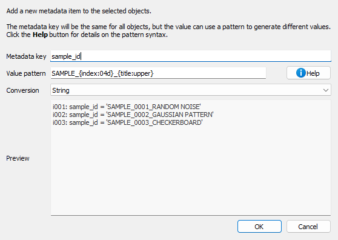
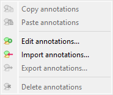
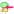
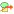
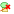

Manipuler les métadonnées et les annotations#
Cette section décrit comment manipuler les métadonnées et les annotations dans DataLab.
Les métadonnées d’une image contiennent diverses informations sur l’image ou sa représentation, telles que les paramètres d’affichage, les régions d’intérêt (ROIs), l’historique de la chaîne de traitement, les résultats d’analyse et toute autre information que vous avez pu ajouter aux métadonnées d’une image (ou qui provient du fichier image lui-même).
Voir aussi
Pour plus d’informations sur les régions d’intérêt (ROIs), voir la section Régions d’intérêt (ROI).

Capture d’écran du menu « Édition ».#
Le menu « Édition » vous permet d’effectuer des opérations d’édition classiques sur l’image ou le groupe d’images actuel (créer/renommer un groupe, déplacer vers le haut/vers le bas, supprimer l’image/le groupe d’images, etc.).
Comme détaillé ci-dessous, il vous permet également de :
Naviguer et utiliser l’historique de la chaîne de traitement grâce à des actions telles que « Recalculer » et « Sélectionner les objets sources ».
Manipuler les métadonnées et les annotations associées à l’image actuelle, grâce aux sous-menus « Métadonnées » et « Annotations » qui offrent les fonctionnalités suivantes.
Recalculer#
L’action « Recalculer » vous permet de recalculer l’image (ou les images) sélectionnée(s) en utilisant leurs paramètres de traitement d’origine. Cela est utile lorsque vous souhaitez réexécuter la chaîne de traitement qui a été utilisée pour créer une image, par exemple après avoir modifié les paramètres globaux ou les dépendances.
Note
Cette action n’est disponible que pour les images qui ont été créées par des opérations de traitement et qui ont des paramètres de traitement stockés.
Sélectionner les objets sources#
L’action « Sélectionner les objets sources »

vous permet de sélectionner l’objet (ou les objets) sources qui ont été utilisés pour créer l’image actuellement sélectionnée. Cela aide à retracer l’historique de traitement et à comprendre quelles images d’origine ont été utilisées comme entrée pour le résultat actuel.Note
Cette action n’est disponible que lorsqu’une seule image est sélectionnée et que cette image possède des références d’objets sources.
Métadonnées#

Capture d’écran du sous-menu « Métadonnées ».#
Copier/coller les métadonnées#
Compte tenu du fait que les métadonnées contiennent des informations utiles sur l’image, elles peuvent être copiées et collées d’une image à une autre en sélectionnant les actions « Copier les métadonnées » et « Coller les métadonnées » dans le menu « Édition ».
Cette fonctionnalité vous permet de transférer ces informations d’une image à une autre :
Régions d’intérêt (ROIs) : c’est un moyen très efficace de réutiliser la même ROI sur différentes images et de comparer facilement les résultats de l’analyse sur ces images
Résultats de calcul, tels qu’une position de barycentre ou une détection de contour (la pertinence du transfert de ces informations dépend du contexte et il appartient à l’utilisateur d’en décider)
Toute autre information que vous avez pu ajouter aux métadonnées d’une image
Note
Copier les métadonnées d’une image à une autre écrasera les métadonnées de l’image de destination (pour les clés de métadonnées communes aux deux images) ou ajoutera simplement les clés de métadonnées qui ne sont pas présentes dans l’image de destination.
Importer/exporter les métadonnées#
Les métadonnées peuvent également être importées et exportées depuis/vers un fichier JSON en utilisant les actions « Importer les métadonnées » et « Exporter les métadonnées » dans le menu « Édition ». C’est exactement la même chose que la fonctionnalité de copier/coller des métadonnées (voir ci-dessus pour plus de détails sur les cas d’utilisation de cette fonctionnalité), mais cela vous permet de sauvegarder les métadonnées dans un fichier et de les importer ultérieurement.
Supprimer les métadonnées#
Lors de la suppression des métadonnées en utilisant l’action « Supprimer les métadonnées » dans le menu « Édition », vous serez invité à confirmer la suppression des régions d’intérêt (ROIs) si elles sont présentes dans les métadonnées. Après cette confirmation éventuelle, les métadonnées seront supprimées, ce qui signifie que les résultats d’analyse, les ROIs et toute autre information associée à l’image seront perdus.
Ajouter des métadonnées#
L’action « Ajouter des métadonnées » vous permet d’ajouter des éléments de métadonnées personnalisés à une ou plusieurs images sélectionnées. Cela est utile pour étiqueter les images avec des identifiants d’expérience, des noms d’échantillons, des étapes de traitement ou toute autre information personnalisée.

Boîte de dialogue Ajouter des métadonnées.#
Lorsque vous sélectionnez « Ajouter des métadonnées… » dans le menu Édition, une boîte de dialogue apparaît où vous pouvez :
Clé de métadonnées : Entrez le nom du champ de métadonnées à ajouter
Modèle de valeur : Définir un modèle pour la valeur des métadonnées en utilisant des chaînes de format Python
Conversion : Choisissez comment stocker la valeur (chaîne, flottant, entier ou booléen)
Aperçu : Voir comment les métadonnées seront ajoutées à chaque image sélectionnée
Le modèle de valeur prend en charge les espaces réservés suivants :
{title}: Titre de l’image{index}: Index basé sur 1 de l’image dans la sélection{count}: Nombre total d’images sélectionnées{xlabel},{xunit},{ylabel},{yunit}: Étiquettes et unités des axes{metadata[key]}: Accéder aux valeurs de métadonnées existantes
Vous pouvez également utiliser des modificateurs de format :
{title:upper}: Convertir en majuscules{title:lower}: Convertir en minuscules{index:03d}: Formater en nombre à 3 chiffres avec des zéros devant
Exemples :
Ajouter le numéro d’acquisition : clé=``acquisition``, modèle=``ACQ_{index:04d}``, conversion=chaîne → Crée des métadonnées comme
acquisition="ACQ_0001"Ajouter le temps d’exposition : clé=``exposure_ms``, modèle=``{metadata[exposure]}``, conversion=float → Copie l’exposition des métadonnées existantes et la convertit en float
Identifier les images étalonnées : clé=``is_calibrated``, modèle=``true``, conversion=bool → Définit
is_calibrated=Truepour toutes les images sélectionnées.
Annotations#
Les annotations sont des éléments visuels qui peuvent être ajoutés aux images pour mettre en évidence des caractéristiques spécifiques, marquer des régions d’intérêt ou ajouter des notes explicatives. DataLab propose un sous-menu dédié dans le menu « Édition » pour gérer les annotations.

Capture d’écran du sous-menu « Annotations ».#
Copier/coller les annotations#
Les annotations peuvent être copiées d’une image et collées sur une ou plusieurs autres images en utilisant les actions « Copier les annotations » et « Coller les annotations » . Cela est utile lorsque vous souhaitez appliquer les mêmes marqueurs visuels à plusieurs images.
L’action « Coller les annotations » n’est activée que lorsqu’il y a des annotations dans le presse-papiers (c’est-à-dire après avoir utilisé « Copier les annotations »).
Edit annotations#
L’action « Éditer les annotations » ouvre une boîte de dialogue où vous pouvez visualiser, ajouter, modifier ou supprimer des annotations de l’image actuelle. Cela offre un moyen visuel de gérer toutes les annotations sur une image.
Importer/exporter les annotations#
Les annotations peuvent être enregistrées et chargées à partir de fichiers JSON (extension .dlabann) en utilisant les actions « Importer les annotations »

et « Exporter les annotations »
. Cela vous permet de :Enregistrer des ensembles d’annotations pour une réutilisation ultérieure
Partager des annotations avec des collègues
Archiver les annotations séparément des données d’image
Appliquer les mêmes annotations à différentes images au cours des sessions
L’action « Exporter les annotations » n’est disponible que lorsque l’image sélectionnée a des annotations.
Supprimer les annotations#
L’action « Supprimer les annotations »

supprime toutes les annotations des images sélectionnées. Cette action n’est activée que lorsque les images sélectionnées ont des annotations.Note
Les annotations sont stockées séparément des métadonnées et des résultats d’analyse. La suppression des annotations n’affecte pas les ROIs ou d’autres éléments de métadonnées.
Titres des images#
Les titres des images peuvent être considérés comme des métadonnées du point de vue de l’utilisateur, même s’ils ne sont pas stockés dans les métadonnées de l’image (mais dans un attribut de l’objet image).
Le menu « Édition » vous permet de :
« Ajouter le titre de l’objet au graphique » : cette action ajoutera une étiquette en haut de l’image avec son titre, ce qui peut être utile en combinaison avec l’opération « Distribuer sur une grille » (voir Traitement des images) pour identifier facilement les images.
« Copier les titres dans le presse-papiers » : cette action copiera les titres des images sélectionnées dans le presse-papiers, ce qui peut être utile pour les coller dans un éditeur de texte ou dans un tableur.
Exemple du contenu du presse-papiers :
g001: s001: lorentz(a=1,sigma=1,mu=0,ymin=0) s002: derivative(s001) s003: wiener(s002) g002: derivative(g001) s004: derivative(s001) s005: derivative(s002) s006: derivative(s003) g003: fft(g002) s007: fft(s004) s008: fft(s005) s009: fft(s006)